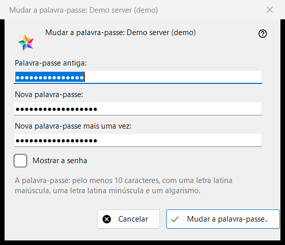
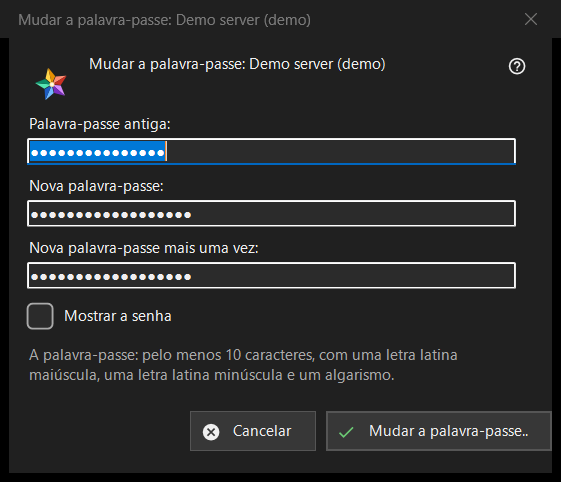

Mudar a palavra-passe
Finalidade
Muda a palavra-passe da sua conta num servidor de troca. Abre-se no botão «Mudar a palavra-passe..» de uma entrada de servidor na seção «Os meus dispositivos» da lista de recursos; o botão aparece enquanto esse servidor está online. O título nomeia a conta.


Nesta ordem
- Digite a palavra-passe antiga.
- Digite a palavra-passe nova duas vezes.
- Pressione «Mudar a palavra-passe..»; «Cancelar» fecha a janela e não envia nada.
Os elementos
Os três campos
«Palavra-passe antiga:», «Nova palavra-passe:» e «Nova palavra-passe mais uma vez:»; «Mostrar a senha» as revela. As caixas são apagadas quando a janela se fecha. A janela apenas recolhe as palavras-passe: o programa as envia ao servidor pela ligação dessa entrada.
A regra da palavra-passe
A nota diz: pelo menos 10 caracteres, com uma letra latina maiúscula, uma minúscula e um algarismo. A janela verifica isso antes de enviar qualquer coisa e nomeia a parte que falha, por exemplo «A palavra-passe tem menos de 10 caracteres.» ou «A palavra-passe não tem nenhum algarismo.»; também diz «Indique a palavra-passe antiga.» e «As duas palavras-passe não coincidem.». O servidor aplica a mesma regra e tem a última palavra.
Depois da mudança
Em caso de sucesso, o estado diz «A palavra-passe mudou. Este computador continua a funcionar, e os outros dispositivos da conta têm de iniciar sessão de novo.» As recusas: a palavra-passe antiga não serviu; demasiadas tentativas (espere um minuto e repita); o servidor recusou a mudança; não há ligação ao servidor (ligue-se e repita).